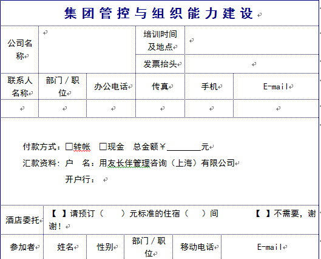

|
胡圣浩博士 课程中心相关电子文档十 |

你能看透经济的迷雾吗？面对全球经济萧条的经济，我们该何去何从？
为什么民营企业活的那么艰难？
为什么公司的业务去年还一片繁荣，而转眼之间就急转直下？
为什么柯达倒闭、摩托罗拉、诺基亚转手？
沃尔玛、李宁、耐克为什么不断关闭门店？
成长期之痛，企业如何做到持续盈利？我们该如何下手？
生意难做、赚钱困难，企业还做不做？
客户要求越高，利润越来越薄，如何获得突破?
现金流周转困难， 生意越大越缺钱，应收款回收困难?
人难招，难管，难留，企业如何解决?
企业转型之路在何方？
……
企业不转型，必死！
胡圣浩博士讲授实操企业转型案例！
课纲
一、 “世界工厂”的末路
为什么珠三角、长三角企业不断跑路、倒闭？
二、 经济环境的五大压力
三、 如何解读习李新政
四、 企业转型升级遇到的十大困局与挑战
你过去依靠什么成功？现在还可以依靠吗？
老板应该扮演的十大角色？
五、 如何在经济困局下发现新的行业机会
Ø 发现三大行业机会
六、 企业战略转型的六大策略
Ø 为什么IBM转型成功，而国美为什么转型不成功？
Ø 如何设计大跨越式增长的企业战略
Ø 如何进行顶层设计，抢占战略制高点？
Ø 如何打造行业第一品牌
Ø 如何打造企业的自动提款机系统
Ø 如何让产品高价营销的方法
Ø 如何设计吸引风险投资公司主动投资的模式
Ø 如何整合政策、行业、银行、媒体的力量1年提高20倍的业绩
给你投资1000万，你能干什么？
给你1000万，你能否干到3000亿？
七、 如何进行新的商业模式设计
Ø 从苹果、小米手机看看新的商业模式
Ø 如何进行价值整合
Ø 如何运用打造百亿资产的商业公式？
Ø “去哪儿”为什么能成功？
八、 战略执行创新――构建战略执行体系与框架
Ø 单店竞争与系统制胜
Ø 北大荒米业集团战略执行体系打造
Ø 你的企业处于什么阶段？如何进行管控？
Ø 如何运用股权激励你的高管团队？
Ø 如何进行股权激励？
Ø 你的企业如何进行数据化管理？
Ø 你会授权吗？你公司决策体系完善吗？
【参会人员】：
企业董事长、总经理、公司高管、互联网创业者、战略规划人员等。
【研讨会时间】：
半天（9：00―12:00）
【研讨会收费】500元
【专家简介】：
n 战略创新与商业模式实战专家，清华大学、北京大学、中山大学等客座教授，经济学博士，中国改革研究院产业经济学术专家，国际注册管理咨询师（CMC），广东省品牌咨询协会专家委员，多家杂志特约撰稿人、中国总裁网、中国讲师网金牌讲师，PTT职业讲师。近20年工作经验，曾在海南大学、用友集团等公司工作，任职项目总监和高级合伙人、总经理。
n 服务过的客户，不限于以下：
北大荒米业集团战略、集团管控、人力资源项目、河北沧州市政集团咨询（一期二期、三期）、浙江交通投资集团集团管控咨询(一期二期)、东方航空集团集团管控咨询、上海上置集团战略梳理与管控项目、天津津能投资集团管控、深圳投资控股领导人员规划咨询项目、广西新凯骅集团管控项目、海南城建集团公司战略规划与管控、海南和信集团战略项目等
n 发表著作：《从战略到执行――战略落地系统解决之道》、《管理学原理》、《组织行为学原理与实务》、《市场营销》、《营销策划》等专著5部，30余篇论文
n 培训课程：主讲《战略转型与商业模式创新》、《咨询式战略规划实操》、《战战略执行：战略落地1+6模式》、《集团管控与组织能力建设》、《中层团队执行力》、《目标管理与绩效改进》等
n 咨询服务项目：战略转型与规划、商业模式设计、产业园规划、经营计划、人力资源薪酬、绩效考核设计、品牌策划等。
| 逻辑严谨 | 抽丝剥笋 |
|---|---|
| 语言生动 | 深入浅出 |
| 注重体验 | 寓教于乐 |
| 结果导向 | 支持实操 |
| 亲力亲为亲身运用独创的管理方法,结合学员的实际情况,讲授自己做过的案例 | 启发学员多角度思考，促其开悟，极大地提升学员的工作成效和业绩(来自客户) |